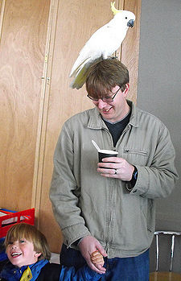

Who am I?

Kai Tahu, Kati Mamoe, Waitaha
Born in Kawakawa, grew up in Whanganui, live in Wellington
BSc Compsci, BA Maths and Māori Studies
One of the original Koha developers
Release manager for version 3.6.0